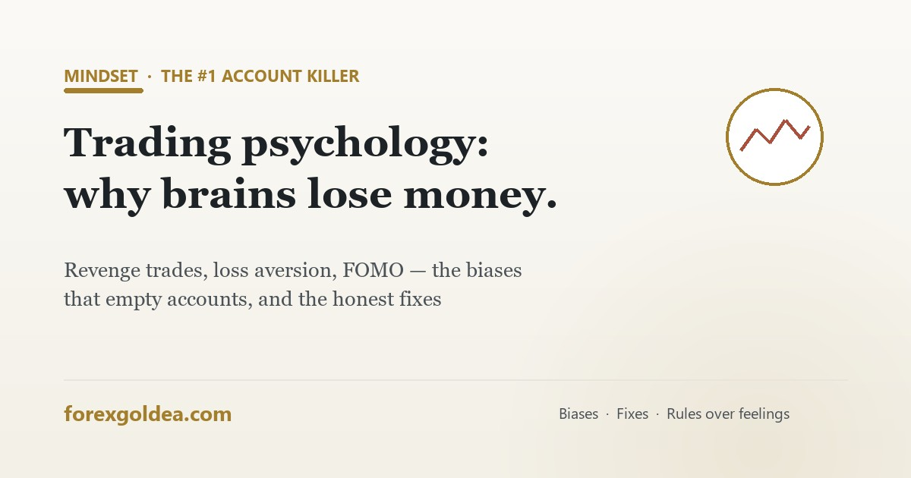

Trading psychology: why your brain loses money (and the honest fixes)

Broker statistics say most retail accounts lose money — and almost none of those losses come from bad market analysis. They come from a brain doing exactly what brains evolved to do, in an environment where those instincts cost money. Here's the honest map of the problem, and the fixes that actually work.
The six biases that empty accounts
| Bias | What the brain does | What the account sees |
|---|---|---|
| Loss aversion | Losses hurt ~2x more than equal gains feel good | Losers held "until they come back"; winners cut early — the exact opposite of edge |
| Revenge trading | A loss demands immediate emotional repair | Doubled size, no setup, minutes after a stop-out — the classic account-ender |
| FOMO | Rising prices scream "everyone's getting rich but you" | Buying the top of the move patience would have entered properly |
| Overconfidence | A winning streak feels like skill mastery | Risk creep: 1% becomes 5% right before the losing streak arrives |
| Sunk cost | "I've already lost so much on this idea…" | Averaging into losers; refusing the small planned loss |
| Recency bias | The last few trades feel like the new reality | Strategy-hopping after 3 losses; over-sizing after 3 wins |
Notice the pattern: every bias attacks execution, not analysis. The trader's chart reading was often fine — the plan died between decision and click.
Why knowing this doesn't fix it
Every losing trader has read a psychology article. The biases persist because they aren't knowledge gaps — they're hardwired responses to money-pain and money-hope that fire faster than reflection. Under stress (a losing streak, a missed move), the reflective brain gets bypassed exactly when it's needed. This is why "just be disciplined" ranks among the most useless advice in trading: it prescribes the output while ignoring the machinery.
The fixes that actually work (in order of strength)
- Written rules — before the session. Entry conditions, 1–2% risk, stop placement, daily loss limit. Decisions made calmly, in advance, are the only ones worth trusting.
- Hard daily stop-loss limit. Two or three losses → done for the day, platform closed. Revenge trading can't fire if the gun is unloaded.
- A journal with reasons. Writing "entered without setup — annoyed about previous loss" ten times creates the self-awareness lectures can't. Review weekly.
- Position sizing that removes fear. If a single trade's loss genuinely hurts, the size is wrong — fear-sized positions produce panic exits from good trades. The drawdown math defines "survivable."
- Structural automation — the honest end-game. An EA executes the written rules at 3am, after three losses, during the FOMO spike — identically. It doesn't remove market risk (nothing does); it removes the gap between plan and click, which is where this entire article's damage happens.
The automation honesty box
A 20-minute psychology audit
- Pull your last 20 trades. Mark each: planned (followed written rules) or emotional (revenge, FOMO, boredom, "felt right").
- Total the P&L of each group separately. For most struggling traders, the planned group breaks even or better — the emotional group is the entire loss.
- That number is your psychology bill. Every fix above is cheaper.
Frequently asked questions
What is trading psychology?
How biases and emotions break trading execution — where most losses actually come from.
What is revenge trading and how do I stop it?
Post-loss emotional re-entry at bigger size. Fix: hard daily loss limit, decided in advance.
Why do I cut winners early and hold losers?
Loss aversion — hardwired. Fixed TP/SL rules set in advance override it.
Can trading psychology be fixed by willpower?
Not reliably — structure beats willpower: rules, limits, journal, automation.
Does automated trading solve trading psychology?
The execution half, yes. New test: leaving it alone — solved by pre-decided review rules.
What's the fastest way to see my psychology leaks?
20-trade audit: planned vs emotional P&L. The emotional column is the bill.
Bottom line
Trading psychology isn't a soft topic bolted onto the real skills — for most retail traders it IS the difference between their backtest and their bank balance. The biases are hardwired and lectures don't uninstall them; structure does. Write the rules, cap the daily damage, journal the reasons, size below the fear line — and hand execution to code if the gap between plan and click keeps costing you. The market charges tuition either way; structure just makes it a one-time fee.
Affiliate disclosure: we earn a commission when you open and fund an account through our partner links, at no extra cost to you.